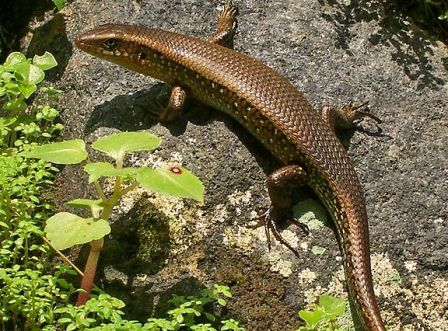
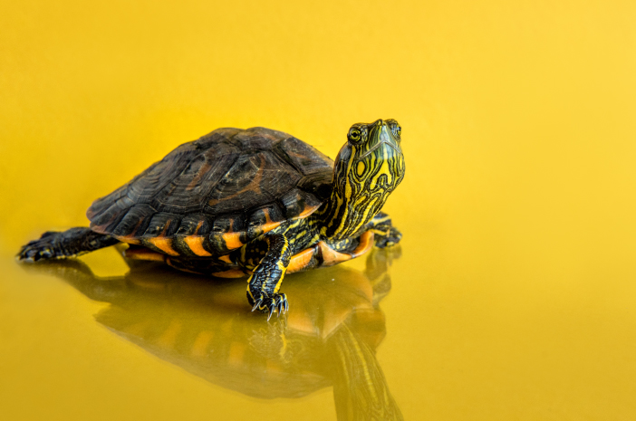

Reptil atau binatang melata (dalam bahasa Latin “reptans” artinya “melata” atau “merayap”) adalah kelompok hewan vertebrata berdarah dingin dan memiliki sisik yang menutupi tubuhnya. Reptilia adalah tetrapoda (hewan dengan empat tungkai) dan menelurkan telur yang embrionya diselubungi oleh membran amniotik. Saat ini, mereka hidup di setiap benua, kecuali Antarktika.
Beberapa ahli telah mengatakan bahwa hewan melata adalah organisme pertama yang menyebar ke seluruh rumah, dari habitat kering hingga air kecil. Contoh hewan melata yang hidup di habitat seperti itu adalah komodo dan kadal. Reptil tidak hanya hidup di lingkungan yang kering dan kering, tetapi juga dikenal sebagai hewan yang hidup dalam dua bahasa alami atau ilmiah yang disebut dengan amfibi (air dan darat). Namun, hanya beberapa spesies yang hidup di daerah tersebut. Contohnya adalah kura-kura, ular, dan buaya.
Reptil memiliki habitat penting di daratan. Ketika berada di dalam air, mereka hanya bisa memberi makan atau menurunkan suhu tubuh mereka. Selain itu, reptil memiliki tinggi tubuh yang berbeda-beda, dari yang terkecil hingga yang terbesar.
CONTOH HEWAN MELATA
- Ular
King cobra adalah spesies ular berbisa terpanjang di dunia.
Hewan bernama latin Ophiophagus hannah ini memiliki panjang 3,18-4 meter. Ular jantan berukuran lebih besar daripada ular betina.Tubuh bagian atas king cobra berwarna cokelat kekuningan atau keabu-abuan dan zaitun dengan bagian kepala cenderung lebih terang.
- Kadal

Adalah kelompok reptilia bersisik berkaki empat, di mana beberapa spesiesnya tidak berkaki dan mirip ular, tersebar sangat luas di dunia. Secara ilmiah, kelompok ini dikenal sebagai subordo atau anak bangsa Lacertilia (beberapa literatur menyebut Sauria), merupakan anggota bangsa reptilia bersisik (Squamata) bersama dengan ular.
- Buaya
Adalah reptil bertubuh besar yang hidup di air. Secara ilmiah, buaya meliputi seluruh spesies anggota suku Crocodylidae, termasuk juga buaya sepit (Tomistoma schlegelii). Meski demikian, nama ini dapat pula dikenakan secara longgar untuk menyebut buaya aligator, kaiman, dan gavial; yakni kerabat buaya yang berlainan suku.
- Kura-kura

Adalah hewan bersisik berkaki empat yang termasuk golongan reptil. Jenis hewan melata yang disebut Testudines atau Chelonians ini khas dan mudah dikenali karena memiliki “rumah” atau batok (bony shell) yang keras juga kaku.
- Iguana
dalah marga kadal yang hidup di daerah tropis Amerika Tengah, Amerika Selatan, dan kepulauan Karibia. Kadal ini dideskripsikan pertama kali oleh ahli hewan berkebangsaan Austria, Josephus Nicolaus Laurenti, pada 1768. Sejauh ini, genus Iguana hanya terdiri dari dua spesies, yaitu iguana hijau (Iguana iguana) dan iguana antilles kecil (Iguana delicatissima).